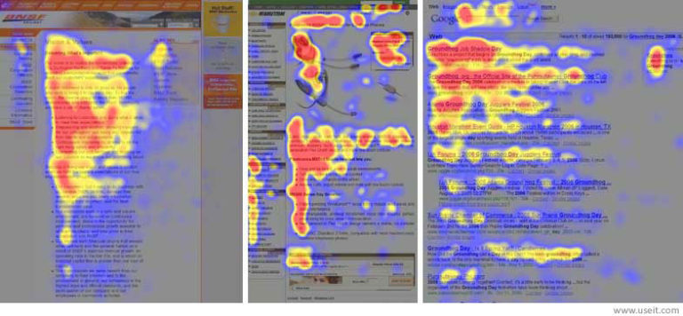

Eye-tracking studies show that people read online documents in an F-shaped pattern, as today’s images show:

Readers in cultures that read left to right scan across the top of the page and then down the left side of the page until they find another significant word or phrase that catches their attention. At that point, they scan across the page a bit and then resume scanning down the page a little further. People rarely read everything on the page. They scan and decide in a matter of seconds what action to take next. They may never scroll down the page.
If you are writing documents that people will read online—whether email messages, attached files, or webpages—you need to use document design elements that will put your most important information in the path of the F-shape pattern. In fact, people use this pattern even when pages are printed out.
Photo Credit: Jakob Nielsen's F-Shaped Pattern For Reading Web Content